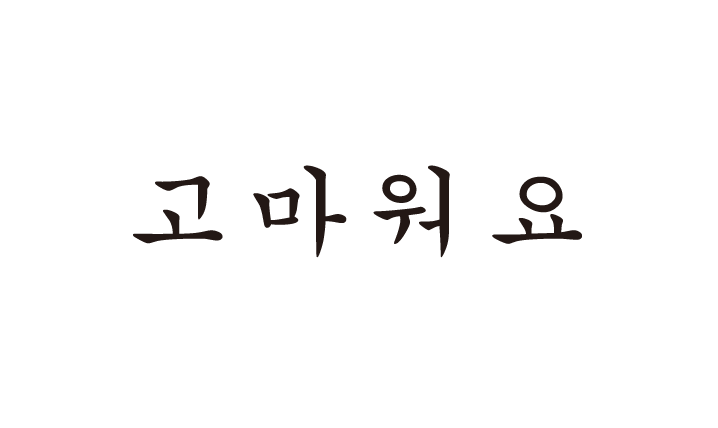
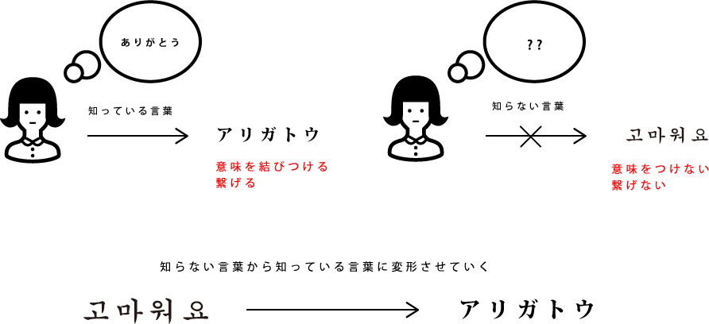

DESIGHN/UIUX
Webサービス「Job Tree Japan」
留学生就活支援サイト「Job」 Tree Japan」webサイトデザイン
2018/9〜

留学生が日本で夢をつかむために
BACKGROUND
優秀な留学生を獲得するために
近年、日本の市場は全世界に広がっている。それに伴い多くの企業がグローバルに働ける人材を求めている。そのため優秀な外国人留学生の獲得が課題となっている。しかし現状は日本と母国での就職活動の文化の違いや求めているキャリアパスと一致している企業がなかなか見つからないなど多くの外国人留学生は日本での就職を諦めている。
TARGET
外国語から日本語へ変化するパラパラ漫画を製作した。ページ数約100枚illustratorで製作し、実際は画用紙を使いボンドを使う製本方法で自分で製本し、韓国語、タイ語、中国語それぞれ、「ありがとう、さよなら、おはよう」でパラパラ漫画を制作した。
COMMENTARY
私たちは普段ある特定の形をした図形（文字）に意味を恣意的に結びつけている。しかし知らない言語では意味を結びつけることができない。段階的に変化させることによってどこから意味を繋げるのか、意味を知る前と知った後では同じ形でも感じ方が変わる